Phantom Jobs
Ability usage and responsibilities for common Phantom Jobs across the Forked Tower: Blood.
Overview
This guide covers the core abilities and responsibilities for each Phantom Job in the Forked Tower: Blood. Each job has specific roles in boss encounters, traversal sections, or both. Refer to your job's section below for detailed usage notes.
Knight
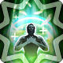
Pray- A 30-minute buff that decreases party damage taken by 10%. Use at any available crystals.
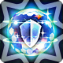
Pledge- Can be used on the fireballs during Boss 2 to block 2 hits. Pledge cannot cover all 3, so mitigate the first hit normally and use Pledge for the remaining two.
- Use on Conduits during Boss 4 to negate their damage while standing inside them.
Bard
- Romeo's Ballad
- Use when the Tower Idols on Bridges have all begun casting. Position on the outside of the group beforehand to avoid clipping the Tower Idols on the opposite bridge, which may cause stun failures.
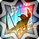
Hero's Rime- Use during 2-minute burst windows.
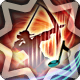
Offensive Aria- Keep active at all times outside of 2-minute burst windows.
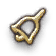
Geomancer Suspend
Suspend
- Use before crossing blue electric floor tiles in Hallways and Bridges. This allows you to float above the floor and reach the buttons that disable it.
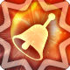
Battle Bell- Keep active on Phantom Berserkers.
Use these macros to apply Battle Bell to Phantom Berserkers who may not be in your party. We mark them with Attack 7 and 8 so you can target them easily.
Bell Macro 1
/ac "Phantom Action I" <attack7> /wait 1 /echo ------------------------ /echo Bell 1 Applied /echo -- /wait 26 /echo <se.3> use Bell on 2 soon /wait 3 /echo <se.2> use Bell on 2! /micon "Phantom Action I"
Bell Macro 2
/ac "Phantom Action I" <attack8> /wait 1 /echo ------------------------ /echo Bell 2 Applied /echo -- /wait 26 /echo <se.3> use Bell on 1 soon /wait 3 /echo <se.2> use Bell on 1! /micon "Phantom Action I"
 Time Mage
Time Mage
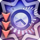
Occult Slowga- Apply to all trash packs to slow their cast times. This is your top priority.
 Occult Dispel
Occult Dispel
- Required on specific enemies to remove buffs that would otherwise cause a wipe.
- Boss 1, Add Phase: Use on the large add.
- Hallways, Tower Scarab: Use after it casts Rhino Guard.
- Bridges, Tower Abyss: Use after it casts Diffuse Darkness.
Failing to dispel Diffuse Darkness can wipe the raid.
- Lockwards, Guardian Knight: Use on pull and whenever it reapplies its invulnerability.
- Required on specific enemies to remove buffs that would otherwise cause a wipe.
 Thief
Thief
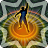
Trap Detection- Reveals hidden traps in Hallways, Bridges, and Lockwards.
In some cases, Phantom Rangers may choose to blind-snipe traps instead. Your Raid Leader will inform you if this applies.
- Reveals hidden traps in Hallways, Bridges, and Lockwards.
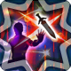
Pilfer Weapon- Use on the Guardian Weapon in Lockwards.
If left unused, the Guardian Weapon's attacks become much larger and can easily wipe the raid.
- Use on the Guardian Weapon in Lockwards.
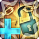
Lockpicker- A passive trait that allows you to open select locked doors throughout the Tower.
Ranger
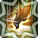
Occult Falcon- Use to safely disarm traps in Hallways, Bridges, and Lockwards.
Only disarm when it is safe to do so. If the Raid Leader calls to hold, do not disarm.
- Use to safely disarm traps in Hallways, Bridges, and Lockwards.
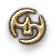
Samurai Iainuki
Iainuki
- Use on trash packs for a chance to instantly kill enemies.
- Keep on cooldown during boss encounters for its high damage output.
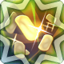
Zeninage- Keep on cooldown during boss encounters. This is an extremely potent ability and will account for the majority of your damage.
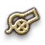
Cannoneer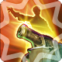
Phantom Fire- Use on trash packs for a chance to instantly kill enemies.
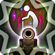
Silver Cannon- Keep active on the boss at all times to increase their damage taken. This is a significant gain for the raid.
Does not stack with Dancer's Mesmerize.
- Keep active on the boss at all times to increase their damage taken. This is a significant gain for the raid.
Dancer
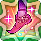
Quickstep- A 30-minute buff that increases party damage by 2%. Use at any available crystals.
- Mesmerize
- Keep active on the boss at all times to increase their damage taken. This is a significant gain for the raid.
Does not stack with Cannoneer's Silver Cannon.
- Keep active on the boss at all times to increase their damage taken. This is a significant gain for the raid.
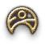
Mystic Knight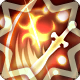
Blazing Spellblade- Keep active on the boss at all times to increase their damage taken. This is a significant gain for the raid.
Stacks with Cannoneer's Silver Cannon and Dancer's Mesmerize.
- Keep active on the boss at all times to increase their damage taken. This is a significant gain for the raid.
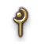
Chemist/White Mage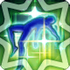
Revive / Occult Raise- The only means of raising fallen players inside the Forked Tower. Reviving the dead should always be your top priority.
We usually mark Chemists and White Mages in other parties with Bind markers . Use these macros to raise them quickly, as keeping them alive is high priority. If multiple Bind targets are dead, the macro targets the first one until they are no longer a valid Revive target.
Chemist Revive Macro
/ac "Phantom Action III" <bind1> /ac "Phantom Action III" <bind2> /ac "Phantom Action III" <bind3> /ac "Phantom Action III" <bind1> /ac "Phantom Action III" <bind2> /ac "Phantom Action III" <bind3> /ac "Phantom Action III" <bind1> /ac "Phantom Action III" <bind2> /ac "Phantom Action III" <bind3> /ac "Phantom Action III" <bind1> /ac "Phantom Action III" <bind2> /ac "Phantom Action III" <bind3> /micon "Phantom Action III"
White Mage Occult Raise Macro
/ac "Phantom Action IV" <bind1> /ac "Phantom Action IV" <bind2> /ac "Phantom Action IV" <bind3> /ac "Phantom Action IV" <bind1> /ac "Phantom Action IV" <bind2> /ac "Phantom Action IV" <bind3> /ac "Phantom Action IV" <bind1> /ac "Phantom Action IV" <bind2> /ac "Phantom Action IV" <bind3> /ac "Phantom Action IV" <bind1> /ac "Phantom Action IV" <bind2> /ac "Phantom Action IV" <bind3> /micon "Phantom Action IV"